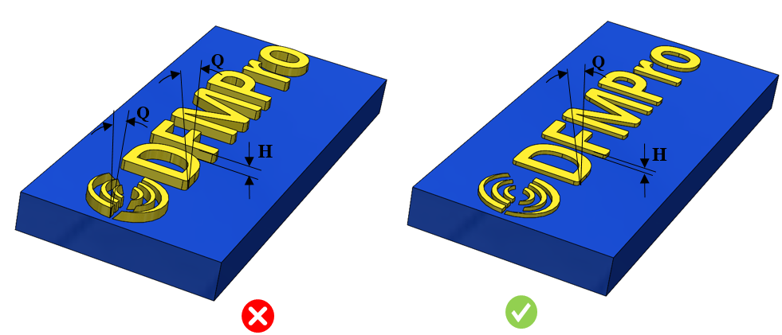

本ルールは、テキストに対する最小ドラフト角をチェックします。
テキスト文字はプラスチック部品における小さなフィーチャーであり、追加情報を伝達するために使用されます。
例：
文字表記
識別マーク
重要な指示、警告
法的情報および規制情報
会社ロゴ、シンボル
テキスト文字はプラスチック部品の小さなフィーチャーであり、部品に凹形状として設けるよりも、浮き出し文字として配置した方が見栄えが良くなります（凹文字の場合、金型に文字が切削加工されます）。部品上の浮き出し文字は読みやすく、容易に確認できます。一方、金型側で凹文字とする場合は研磨が容易になります。これに対して、金型側で浮き出し文字とすると、良好な仕上げを得ることが難しくなります。一般的な設計指針では、離型を容易にし、摩擦や引きずり痕を防ぐために、最小でも0.5度のドラフト角を付与することが推奨されています。
一般的な設計指針として、最小0.5度のドラフト角が必要とされますが、ドラフト角の値はテキスト高さに応じて変化する場合があります。
DFMProでは、テキスト高さに依存しないデフォルトのドラフト角をチェックできます。ただし、必要に応じて、テキスト高さに基づいた値をユーザーが設定することも可能です。

ここでは、
Q = テキストのドラフト角
H = テキストの面高さ